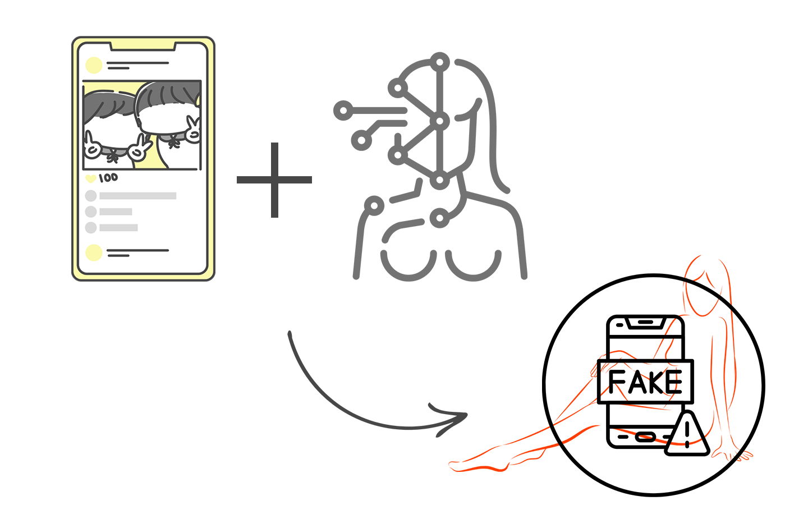
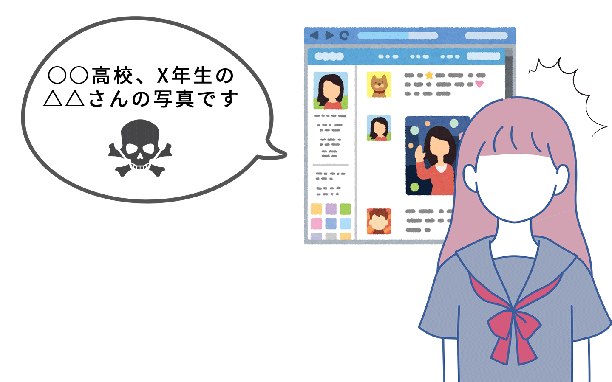

あなたは。。
身近に毒彼が！？
誰とでも仲良い気さくタイプ

あなたは好奇心旺盛で、新しいものを早く試したり行動力のある人。ポジティブで友達も多い分、もしかしたらその中に危険な毒彼が紛れているかもしれません。友達と一緒に撮った写真やSNSの投稿が悪用されてしまうこともあるから、少しでも心配が出た時点で早めに相談できると◎
自分の写真が勝手に拡散されていないかチェック！
知ってる？こんなひどいことがあるんだよ！
あなたの天敵 その１
勝手に裸の写真を作られる...！？
ディープフェイクポルノ

最近、自分の顔写真が別の人の裸の画像に合成されるディープフェイクと呼ばれる被害が増えている...。
友達と一緒に撮った写真をSNSに載せていただけで、その写真が勝手に利用されてしまうことが。
もちろん悪いのは加害者！すぐに相談すれば、加害者にきちんと責任を取らせることができます。
鍵垢で載せてた写真や友達だけが知っている写真が使われてしまうこともあるから、ショックも大きい。加害者が身近な人の場合でも、弁護士への早めの相談がおすすめ。
あなたの天敵 その２
身近な人が情報を拡散...
晒し被害

自分の写真や学校名、名前などの個人情報を性的な言葉と一緒にSNSに投稿される被害も。
悲しいことに同級生や知り合いが加害者であるケースが多い。警察がすぐに動いてくれない場合は、弁護士への相談が確実です。
普通の写真が使われてしまうなんて思わないし、気を付けようがないよね...。悪いのは100%加害者だよ！
自分の写真が悪質なサイトに上げられていないかどうか、無料で簡単にチェックを！
今上げられていないかだけでなく、登録しておくとその後に新しく写真がアップされても検知できるよ。